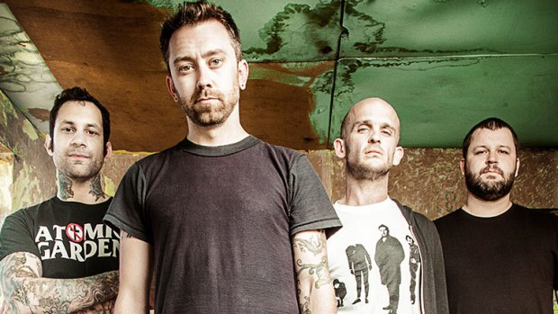

Rise Against
Band Members
Tim Mcrilrath
Vocals, Guitar (1999 - Present)
As lead vocalist and rhythm guitarist, McIlrath has been a driving force behind Rise Against's melodic hardcore sound and socially conscious lyrics since the band's inception
Joe Principe
Bass Guitar (1999 - Present)
A founding member and bassist, Principe's fast-paced and intricate bass lines have been integral to the band's energetic style

Brandon Barnes
Drums (2000 - Present)
Joining as drummer in 2000, Barnes brought a powerful and precise drumming style that solidified the band's rhythm section

Zach Blair
Guitar (2007 - Present)
As lead guitarist since 2007, Blair has contributed to the band's dynamic sound with his melodic riffs and stage presence

Dan Wleklinski
Guitar (1999 - 2001)
A founding member and original lead guitarist, Wleklinski played a key role in shaping the band's early sound

Tony Tintari
Drums (1999 - 2000)
As the band's original drummer, Tintari contributed to their initial recordings before departing in 2000

Todd Mohney
Guitar (2001 - 2004)
Serving as lead guitarist, Mohney was part of the lineup during the recording of the band's second album, Revolutions per Minute
Chris Chasse
Guitar (2004 - 2007)
As lead guitarist, Chasse contributed to the band's third and fourth albums, Siren Song of the Counter Culture and The Sufferer & the Witness
History
Rise Against is an American punk rock band that emerged from Chicago's vibrant music scene in 1999. The original lineup consisted of Tim McIlrath on vocals, Joe Principe on bass, Dan "Mr. Precision" Wleklinski on guitar, and Toni Tintari on drums. Initially performing under the name Transistor Revolt, they quickly gained attention with their self-produced demo, leading to a contract with Fat Wreck Chords. Their debut album, The Unraveling (2001), showcased a raw, energetic punk sound that resonated within the underground scene. The follow-up, Revolutions per Minute (2003), further solidified their reputation, blending melodic hooks with politically charged lyrics. These early works laid the foundation for their distinctive style, characterized by rapid tempos and socially conscious themes. In 2004, Rise Against transitioned to a major label, releasing Siren Song of the Counter Culture, which propelled them into the mainstream spotlight. The album featured hits like "Give It All" and "Swing Life Away," expanding their audience significantly. Subsequent albums, including The Sufferer & the Witness (2006) and Appeal to Reason (2008), continued this trajectory, with tracks like "Prayer of the Refugee" and "Savior" receiving widespread acclaim. Throughout their career, Rise Against has been noted for their commitment to activism, supporting causes related to animal rights, environmentalism, and social justice. Their music often reflects these values, aiming to inspire change and raise awareness. With a discography spanning over two decades, they have maintained a significant presence in the punk rock scene, continually evolving while staying true to their core principles.
Discography


Media
Watch some of Rise Against's iconic performances: